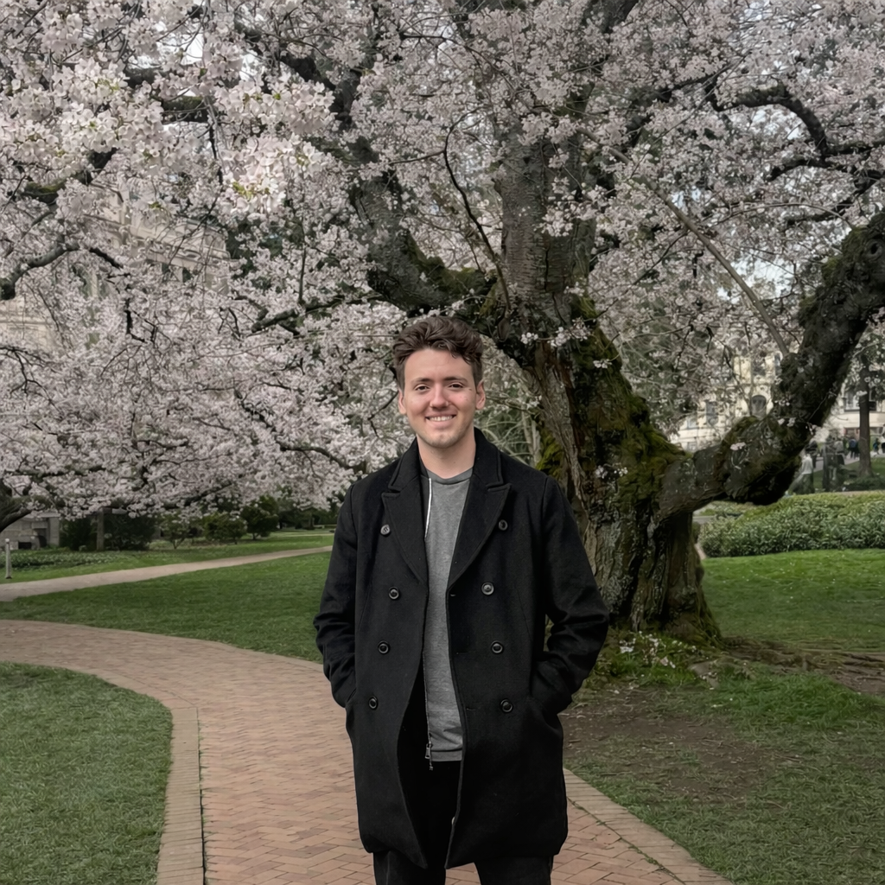
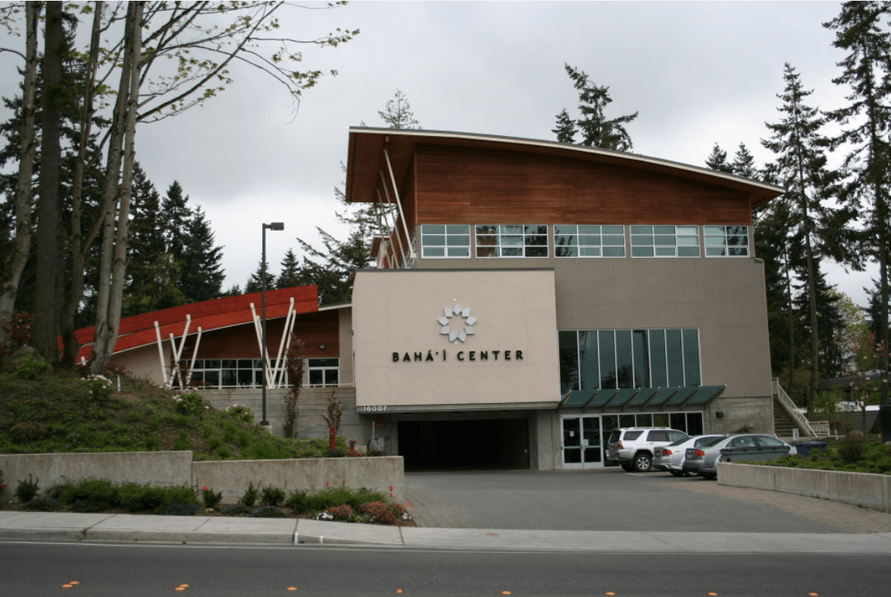

Hi, I'm Callen!
Game developer and programmer. I make games, engines, and tools.

About Me
My dad taught me how to code when I was 10 years old. A decade later, I've created nearly twenty games, working and learning alongside industry professionals. I’ve worked on solo projects, game jams, and student teams.
When I'm not making games, you can find me enjoying the latest Brandon Sanderson book, or traveling with my friends. I was born in Lisbon, Portugal, and every year I visit our family and explore the beautiful streets of Cascais! I'm also a huge fan of Percy Jackson (which is how I got my online alias!)
What I've Done
I studied game development at DigiPen Institute of Technology, where I built games with other students. I also worked as a Gameplay Engineer Intern at ArenaNet, contributing to Guild Wars 3.

JYSEP
As a Baha'i, I've also been involved with JYSEP, the Junior Youth Spiritual Empowerment Program. The program focuses on service and mentorship, helping young people build confidence and contribute to their communities.
Coding With Kids
In my spare time, I work as an instructor at Coding with Kids, helping aspiring programmers learn how to create their own games. It isn't always easy working in a classroom, but seeing the look on their faces when they get something to work is priceless.
I've also worked for TIE (Technology & Innovation in Education), a non-profit that focuses on empowering educators and improving classroom curriculum.